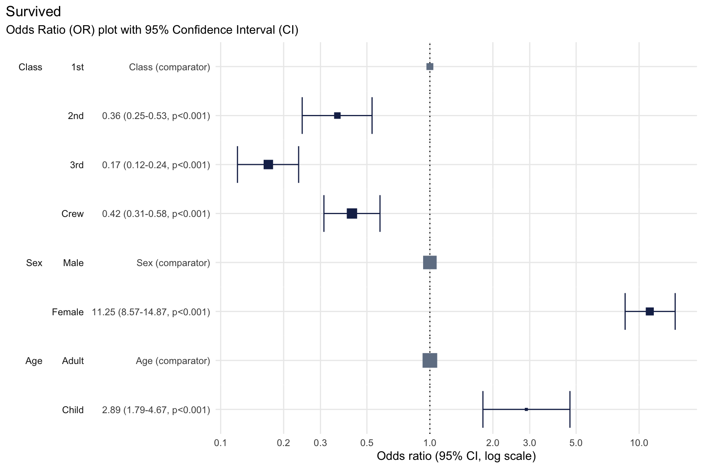

plotor
The goal of plotor is to generate Odds Ratio plots from logistic regression models.
Installation
You can install the development version of plotor from GitHub with:
# install.packages("devtools")
devtools::install_github("craig-parylo/plotor")You can also install the latest released version from CRAN with:
install.packages("plotor")Example
In this example we will explore the likelihood of surviving the Titanic disaster based on passenger economic status (class), sex, and age group.
In addition to plotor the packages we will use include dplyr, tidyr and forcats for general data wrangling, the stats package to conduct the logistic regression followed by broom to tidy the output and convert the results to Odds Ratios and confidence intervals, then ggplot2 to visualise the plot.
library(plotor) # generates Odds Ratio plots
library(datasets) # source of example data
library(dplyr) # data wrangling
library(tidyr) # data wrangling - uncounting aggregated data
library(forcats) # data wrangling - handling factor variables
library(stats) # perform logistic regression using glm function
library(broom) # tidying glm model and producing OR and CI
library(ggplot2) # data visualisationStart with getting the data from the datasets package.
df <- datasets::Titanic |>
as_tibble() |>
# convert counts to observations
filter(n > 0) |>
uncount(weights = n) |>
# convert categorical variables to factors.
# we specify an order for levels in Class and Survival, otherwise ordering
# in descending order of frequency
mutate(
Class = Class |>
fct(levels = c('1st', '2nd', '3rd', 'Crew')),
Sex = Sex |>
fct_infreq(),
Age = Age |>
fct_infreq(),
Survived = Survived |>
fct(levels = c('No', 'Yes'))
)We now have a tibble of data containing four columns:
Survived- our outcome variable describing whether the passenger survivedYesor diedNo,Class- the passenger class, either1st,2nd,3rdorCrew,Sex- the gender of the passenger, eitherMaleorFemale,Age- whether the passenger was anAdultorChild.
We next conduct a logistic regression of survival (as a binary factor: ‘yes’ and ‘no’) against the characteristics of passenger class, sex and age group. For this we use the Generalised Linear Model function (glm) from the stats package, specifying:
the family as ‘binomial’, and
the formula as survival being a function of
Class,SexandAge.
# conduct a logistic regression of survival against the other variables
lr <- glm(
data = df,
family = 'binomial',
formula = Survived ~ Class + Sex + Age
)Finally, we can plot the Odds Ratio of survival using the plot_or function.
# using plot_or
plot_or(glm_model_results = lr)
This plot makes it clear that:
Children were 2.89 times more likely to survive than Adults,
Passengers in
2nd,3rdclass as well asCrewwere all less likely to survive than those in1stclass,Women were 11.25 times more likely to survive than men.
Table outputs
While an odds ratio plot can effectively visualise the direction and magnitude of relationships, a table of results offers additional information such as the value of the odds ratio, p-values and confidence intervals.
Use the table_or() function to return a tibble of details about our Titanic analysis:
# using table_or
table_or(glm_model_results = lr)
#> # A tibble: 8 × 14
#> label level rows outcome outcome_rate class estimate std.error statistic
#> <fct> <fct> <int> <int> <dbl> <chr> <dbl> <dbl> <dbl>
#> 1 Class 1st 325 203 0.625 factor NA NA NA
#> 2 Class 2nd 285 118 0.414 factor 0.361 0.196 -5.19
#> 3 Class 3rd 706 178 0.252 factor 0.169 0.172 -10.4
#> 4 Class Crew 885 212 0.240 factor 0.424 0.157 -5.45
#> 5 Sex Male 1731 367 0.212 factor NA NA NA
#> 6 Sex Female 470 344 0.732 factor 11.2 0.140 17.2
#> 7 Age Adult 2092 654 0.313 factor NA NA NA
#> 8 Age Child 109 57 0.523 factor 2.89 0.244 4.35
#> # ℹ 5 more variables: p.value <dbl>, conf.low <dbl>, conf.high <dbl>,
#> # significance <chr>, comparator <dbl>You can also output these details into a formatted table complete with a mini OR plot, which is ideal for inclusion in reports and publications. To do this, add output = "gt" as part of the table_or() function call.

Assumption checks
New to plotor is a new suite of automated checks. These checks verify the data used in your logistic regression analysis upholds the required assumptions, providing an added layer of confidence in your results.
| Assumption | Description | Status |
|---|---|---|
| The outcome variable is binary |
plotor is designed to work with an outcome variable that has only two possible values, i.e. outcome is binary.
|
✅ |
| The predictor variables should not be highly correlated with each other |
Predictor variables which have high levels of correlation with each other is known as multicollinearity. Where this is the case the odds ratio estimates are likely to be unstable, confidence intervals are likely to be much larger, both of which make it difficult to interpret the results. |
✅ |
| The outcome is not separated by predictors |
In logistic regression, separation occurs when a predictor variable (or a combination of predictor variables) perfectly predicts the outcome variable. Separation results in infinite or extremely large odds ratios and possibly issues with non-convergence of the logistic regression model, making it difficult for the model to estimate the coefficients. |
✅ |
| The sample size is large enough | The sample size should be large enough to provide reliable estimates of the odds ratio. A general rule of thumb is to have at least 10 events (or outcomes of interest) per predictor variable. | ✅ |
| The observations are independent | Each observation should be independent of the others. This means that the outcome for one observation should not be influenced by the outcome of another observation. | In development |
| There are no extreme outlier values | The data should not contain outliers or influential observations that can significantly affect the estimates of the odds ratio. | In development |
| There is a linear relationship between continuous predictors and the logit | The relationship between continuous predictor variables and the log odds of the outcome should be linear. | ✅ |